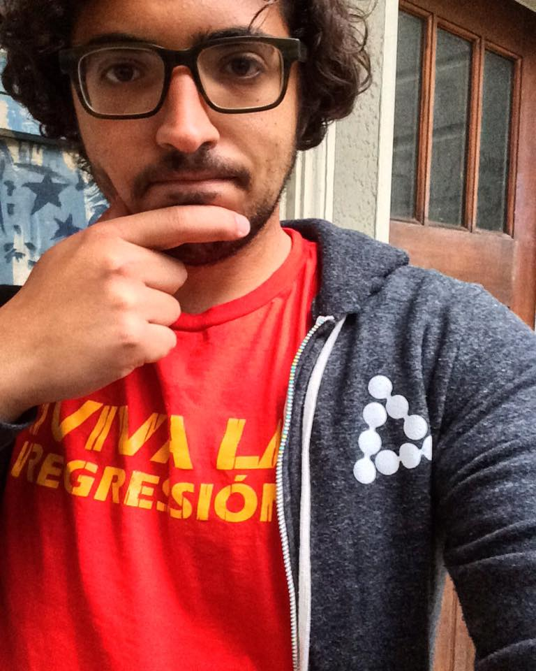

NIPS17: Learning in the Presence of Strategic Behavior
Machine learning is primarily concerned with the design and analysis of algorithms that learn about an entity. Increasingly more, machine learning is being used to design policies that affect the entity it once learned about. This can cause the entity to react and present a different behavior. Additionally, in many environments, multiple learners learn concurrently about one or more related entities. This can bring about a range of interactions between individual learners.
How do the learners and entities interact? How do these interactions change the task at hand? What are some desirable interactions in a learning environment? And what are the mechanisms for bringing about such desirable interactions?
The first Workshop on Learning in Presence of Strategic Behavior will be held in conjunction with the 31st Annual Conference on Neural Information Processing Systems (NIPS 2017), Long Beach, California, on December 8, 2017.
The main goal of this workshop is to address current challenges and opportunities that arise from the presence of strategic behavior in machine learning. This workshop aims at bringing together members of different communities, including machine learning, economics, theoretical computer science, and social computing, to share recent results, discuss important directions for future research, and foster collaborations. Papers from a rich set of theoretical and applied perspectives are invited.
News
-
11/27/2017The workshop schedule is available.
-
09/19/2017Call For Papers is out. Deadline for paper submission is October 23. Submit here.
-
09/15/2017Registration for workshops is open through the main conference webpage.
Invited Speakers
-
Learning in Strategic Data Environments.
We live in a world where activities and interactions are recorded as data: food consumption, workout activities, buying and selling products, sharing information and experiences, borrowing and lending money, and exchanging excess resources. Scientists use the rich data of these activities to understand human social behavior, generate accurate predictions, and make policy recommendations. Machine learning traditionally take such data as given, often treating them as independent samples from some unknown statistical distribution. However, such data are possessed or generated by potentially strategic people in the context of specific interaction rules. Hence, what data become available depends on the interaction rules. For example, people with sensitive medical conditions may not reveal their medical data in a survey but could be willing to share them when compensated; crowd workers may not put in a good-faith effort in completing a task if they know that the requester cannot verify the quality of their contributions. In this talk, I argue that a holistic view that jointly considers data acquisition and learning is important. I will discuss two projects. The first project considers acquiring data from strategic data holders who have private cost for revealing their data and then learning from the acquired data. We provide a risk bound on learning, analogous to classic risk bounds, for situations when agents’ private costs can correlate with their data in arbitrary ways. The second project leverages techniques in learning to design a mechanism for obtaining high-quality data from strategic data holders. The mechanism has a strong incentive property: it is a dominant strategy for each agent to truthfully reveal their data even if we have no ground truth to directly evaluate their contributions.
This talk is based on joint works with Jacob Abernethy, Chien-Ju Ho, Yang Liu, and Bo Waggoner.
-
Learning with Adversaries and Collaborators.
We argue that the standard machine learning paradigm is both too weak and too strong. First, we show that current systems for image classification and reading comprehension are vulnerable to adversarial attacks, suggesting that existing learning setups are inadequate to produce systems with robust behavior. Second, we show that in an interactive learning setting where incentives are aligned, a system can learn a simple natural language from a user from scratch, suggesting that much more can be learned under a cooperative setting.
-
Regret minimization against strategic buyers.
This talk presents an overview of several recent algorithms for regret minimization against strategic buyers in the context of posted-price auctions, which are crucial for revenue optimization in online advertisement.
Joint work with Andres Munoz Medina.
-

Towards cooperative AI
Social dilemmas are situations where individuals face a temptation to increase their payoffs at a cost to total welfare. Importantly, social dilemmas are ubiquitous in real world interactions. We show how to modify modern reinforcement learning methods to construct agents that act in ways that are simple to understand, begin by cooperating, try to avoid being exploited, and forgiving (try to return to mutual cooperation). Such agents can maintain cooperation in Markov social dilemmas with both perfect and imperfect information. Our construction does not require training methods beyond a modification of self-play, thus if an environment is such that good strategies can be constructed in the zero-sum case (eg. Atari) then we can construct agents that solve social dilemmas in this environment.
-
Online learning with partial information for players in games.
Learning has been adopted as a general behavioral model for players in repeated games. Learning offers a way that players can adopt to (possibly changing) environment. Learning guarantees high social welfare in many games (including traffic routing as well as online auctions), even when the game or the population of players is dynamically changing. The rate at which the game can change depends on the speed of convergence of the learning algorithm. If players observe all other participants, which such full information feedback classical learning algorithms offer very fast convergence. However, such full information feedback is often not available, and the convergence of classical algorithms with partial feedback is much good. In this talk we develop a black-box approach for learning where the learner observes as feedback only losses of a subset of the actions. The simplicity and black box nature of the approach allows us to use of this faster learning rate as a behavioral assumption in games. Talk based on joint work with Thodoris Lykouris and Karthik Sridharan.
Program
Location: The workshop takes place at room 101 A on Fri Dec 08.
-
9:00 - 9:45(Invited Talk) Yiling Chen: Learning in Strategic Data Environments.We live in a world where activities and interactions are recorded as data: food consumption, workout activities, buying and selling products, sharing information and experiences, borrowing and lending money, and exchanging excess resources. Scientists use the rich data of these activities to understand human social behavior, generate accurate predictions, and make policy recommendations. Machine learning traditionally take such data as given, often treating them as independent samples from some unknown statistical distribution. However, such data are possessed or generated by potentially strategic people in the context of specific interaction rules. Hence, what data become available depends on the interaction rules. For example, people with sensitive medical conditions may not reveal their medical data in a survey but could be willing to share them when compensated; crowd workers may not put in a good-faith effort in completing a task if they know that the requester cannot verify the quality of their contributions. In this talk, I argue that a holistic view that jointly considers data acquisition and learning is important. I will discuss two projects. The first project considers acquiring data from strategic data holders who have private cost for revealing their data and then learning from the acquired data. We provide a risk bound on learning, analogous to classic risk bounds, for situations when agents’ private costs can correlate with their data in arbitrary ways. The second project leverages techniques in learning to design a mechanism for obtaining high-quality data from strategic data holders. The mechanism has a strong incentive property: it is a dominant strategy for each agent to truthfully reveal their data even if we have no ground truth to directly evaluate their contributions.
-
9:45-10:00Strategic Classification from Revealed Preferences. Jinshuo Dong, Aaron Roth, Zachary Schutzman, Bo Waggoner and Zhiwei Steven Wu.We study an online linear classification problem, in which the data is generated by strategic agents who manipulate their features in an effort to change the classification outcome. In rounds, the learner deploys a classifier, and an adversarially chosen agent arrives, possibly manipulating her features to optimally respond to the learner. The learner has no knowledge of the agents' utility functions or ``real'' features, which may vary widely across agents. Instead, the learner is only able to observe their ``revealed preferences'' --- i.e. the actual manipulated feature vectors they provide. For a broad family of agent cost functions, we give a computationally efficient learning algorithm that is able to obtain diminishing ``Stackelberg regret'' --- a form of policy regret that guarantees that the learner is obtaining loss nearly as small as that of the best classifier in hindsight, even allowing for the fact that agents will best-respond differently to the optimal classifier.10:00-10:15Learning in Repeated Auctions with Budgets: Regret Minimization and Equilibrium. Yonatan Gur and Santiago Balseiro.In online advertising markets, advertisers often purchase ad placements through bidding in repeated auctions based on realized viewer information. We study how budget-constrained advertisers may compete in such sequential auctions in the presence of uncertainty about future bidding opportunities and competition. We formulate this problem as a sequential game of incomplete information, where bidders know neither their own valuation distribution, nor the budgets and valuation distributions of their competitors. We introduce a family of practical bidding strategies we refer to as adaptive pacing strategies, in which advertisers adjust their bids according to the sample path of expenditures they exhibit. Under arbitrary competitors’ bids, we establish through matching lower and upper bounds the asymptotic optimality of this class of strategies as the number of auctions grows large. When all the bidders adopt these strategies, we establish the convergence of the induced dynamics and characterize a regime (well motivated in the context of display advertising markets) under which these strategies constitute an approximate Nash equilibrium in dynamic strategies: The benefit of unilaterally deviating to other strategies, including ones with access to complete information, becomes negligible as the number of auctions and competitors grows large. This establishes a connection between regret minimization and market stability, by which advertisers can essentially follow equilibrium bidding strategies that also ensure the best performance that can be guaranteed off-equilibrium.10:15-10:30
Spotlights
- Strategyproof Linear Regression. Yiling Chen, Chara Podimata, and Nisarg Shah.
- Incentive-Aware Learning for Large Markets. Mohammad Mahdian, Vahab Mirrokni, and Song Zuo.
- Learning to Bid Without Knowing Your Value. Zhe Feng, Chara Podimata and Vasilis Syrgkanis.
- Budget Management Strategies in Repeated Auctions: Uniqueness and Stability of System Equilibria. Santiago Balseiro, Anthony Kim, Mohammad Mahdian and Vahab Mirrokni.
- Dynamic Second Price Auctions with Low Regret. Vahab Mirrokni, Renato Paes Leme, Rita Ren, and Song Zuo.
10:30 - 11:00Coffee Break and Poster Session.11:00 - 11:45(Invited Talk) Eva Tardos: Online learning with partial information for players in gamesLearning has been adopted as a general behavioral model for players in repeated games. Learning offers a way that players can adopt to (possibly changing) environment. Learning guarantees high social welfare in many games (including traffic routing as well as online auctions), even when the game or the population of players is dynamically changing. The rate at which the game can change depends on the speed of convergence of the learning algorithm. If players observe all other participants, which such full information feedback classical learning algorithms offer very fast convergence. However, such full information feedback is often not available, and the convergence of classical algorithms with partial feedback is much good. In this talk we develop a black-box approach for learning where the learner observes as feedback only losses of a subset of the actions. The simplicity and black box nature of the approach allows us to use of this faster learning rate as a behavioral assumption in games.11:45 - 12:30(Invited Talk) Mehryar Mohri: Regret minimization against strategic buyersThis talk presents an overview of several recent algorithms for regret minimization against strategic buyers in the context of posted-price auctions, which are crucial for revenue optimization in online advertisement.12:30 - 01:50Lunch Break.01:50 - 2:35(Invited Talk) Percy Liang: Learning with Adversaries and Collaborators.We argue that the standard machine learning paradigm is both too weak and too strong. First, we show that current systems for image classification and reading comprehension are vulnerable to adversarial attacks, suggesting that existing learning setups are inadequate to produce systems with robust behavior. Second, we show that in an interactive learning setting where incentives are aligned, a system can learn a simple natural language from a user from scratch, suggesting that much more can be learned under a cooperative setting.02:35 - 03:00Spotlights
- Multi-Agent Counterfactual Regret Minimization for Partial-Information Collaborative Games. Matthew Hartley, Stephan Zheng, and Yisong Yue.
- Inference of Strategic Behavior based on Incomplete Observation Data. Antti Kangasrääsiö and Samuel Kaski.
- Inferring agent objectives at different scales of a complex adaptive system. Dieter Hendricks, Adam Cobb, Richard Everett, Jonathan Downing and Stephen Roberts.
- A Reinforcement Learning Framework for Eliciting High Quality Information. Zehong Hu, Yang Liu, Yitao Liang, and Jie Zhang.
- Learning Multi-item Auctions with (or without) Samples. Yang Cai and Constantinos Daskalakis.
- Competing Bandits: Learning under Competition. Yishay Mansour, Aleksandrs Slivkins, and Zhiwei Steven Wu.
- Robust commitments and partial reputation. Vidya Muthukumar and Anant Sahai.
- Learning with Abandonment. Ramesh Johari and Sven Schmit.
03:00 - 03:30Coffee Break and Poster Session.03:30 - 04:15(Invited Talk) Alex Peysakhovich: Towards cooperative AISocial dilemmas are situations where individuals face a temptation to increase their payoffs at a cost to total welfare. Importantly, social dilemmas are ubiquitous in real world interactions. We show how to modify modern reinforcement learning methods to construct agents that act in ways that are simple to understand, begin by cooperating, try to avoid being exploited, and forgiving (try to return to mutual cooperation). Such agents can maintain cooperation in Markov social dilemmas with both perfect and imperfect information. Our construction does not require training methods beyond a modification of self-play, thus if an environment is such that good strategies can be constructed in the zero-sum case (eg. Atari) then we can construct agents that solve social dilemmas in this environment.04:15 - 04:30Statistical Tests of Incentive Compatibility in Display Ad Auctions. Andres Munoz Medina, Sebastien Lahaie, Sergei Vassilvitskii, and Balasubramanian Sivan.Consider a buyer participating in a repeated auction in an ad exchange. How does a buyer figure out whether her bids will be used against her in the form of reserve prices? There are many potential A/B testing setups that one can use. However, we will show many natural experimental designs have serious flaws. For instance, one can use additive or multiplicative perturbation to the bids. We show that additive perturbations to bids can lead to paradoxical results, as reserve prices are not guaranteed to be monotone for non-MHR distributions, and thus higher bids may lead to lower reserve prices! Similarly, one may be tempted to measure bid influence in reserves by randomly perturbing one's bids. However, unless the perturbations are aligned with the partitions used by the seller to compute optimal reserve prices, the results are guaranteed to be inconclusive. Finally, in practice additional market considerations play a large role---if the optimal reserve price is further constrained by the seller to satisfy additional business logic, the power of the buyer to detect the effect to which his bids are being used against him is limited. In this work we develop tests that a buyer can user to measure the impact of current bids on future reserve prices. In addition, we analyze the cost of running such experiments, exposing trade-offs between test accuracy, cost, and underlying market dynamics. We validate our results with experiments on real world data and show that a buyer can detect reserve price optimization done by the seller at a reasonable cost.04:30 - 04:45Optimal Economic Design through Deep Learning. Paul Duetting, Zhe Feng, Harikrishna Narasimhan, and David Parkes.Designing an auction that maximizes expected revenue is an intricate task. Despite major efforts, only the single-item case is fully understood. We explore the use of tools from deep learning on this topic. The design objective is revenue optimal, dominant-strategy incentive compatible auctions. For a baseline, we show that multi-layer neural networks can learn almost-optimal auctions for a variety of settings for which there are analytical solutions, and even without encoding characterization results into the design of the network. Looking ahead, deep learning has promise for deriving auctions with high revenue for poorly understood problems.04:45 - 05:00Learning Against Non-Stationary Agents with Opponent Modeling and Deep Reinforcement Learning. Richard Everett.Humans, like all animals, both cooperate and compete with each other. Through these interactions we learn to observe, act, and manipulate to maximise our utility function, and continue doing so as others learn with us. This is a decentralised non-stationary learning problem, where to survive and flourish an agent must adapt to the gradual changes of other agents as they learn, as well as capitalise on sudden shifts in their behaviour. To learn in the presence of such non-stationarity, we introduce the Switching Agent Model (SAM) that combines traditional deep reinforcement learning - which typically performs poorly in such settings - with opponent modelling, using uncertainty estimations to robustly switch between multiple policies. We empirically show the success of our approach in a multi-agent continuous-action environment, demonstrating SAM's ability to identify, track, and adapt to both gradual and sudden changes in the behaviour of non-stationary agents.
Call for Papers
The NIPS17 Workshop on Learning in Presence of Strategic Behavior will be held in conjunction with the 31st Annual Conference on Neural Information Processing Systems (NIPS 2017), Long Beach, California, on December 8, 2017.
The main goal of this workshop is to address current challenges and opportunities that arise from the presence of strategic behavior in machine learning. This workshop aims at bringing together members of different communities, including machine learning, economics, theoretical computer science, and social computing, to share recent results, discuss important directions for future research, and foster collaborations.
Papers from a rich set of theoretical and applied perspectives are invited. Some areas of interest at the interface of learning and strategic behavior include, but are not limited to:
- Learning from data that is produced by agents who have vested interest in the outcome or the learning process. Examples of this include learning a measure of quality of universities by surveying members of the academia who stand to gain or lose from the outcome, or when a GPS routing app has to learn patterns of traffic delay by routing individuals who have no interest in taking slower routes.
- Learning a model for the strategic behavior of one or more agents by observing their interactions. Examples of this include applications of learning in economic paradigms.
- Learning as a model of interactions between agents. Examples of this include applications to swarm robotics, where individual agents have to learn to interact in a multi-agent setting in order to achieve individual or collective goals.
- Interactions between multiple learners. Examples of this include scenarios where two or more learners learn about the same or multiple related concepts. How do these learners interact? What are the scenarios under which they would share knowledge, information, or data. What are the desirable interactions between learners?
Submissions Instructions
We solicit submission of published and unpublished works. For the former, we request that the authors clearly state the venue of previous publication. Authors are also encouraged to provide a link to an online version of the paper (such as on arXiv). If accepted, such papers will be linked via an index to give an informal record of the workshop. This workshop will have no published proceedings. Accepted submissions will be presented as posters or talks.
Submissions are limited to three pages using the NIPS 2017 format. One additional page containing only cited references is allowed. The review process is not blind. Please use the camera- ready instructions to produce a PDF in the NIPS 2017 format that displays the author’s names.
All submissions should be made through EasyChair on or before October 23, 2017, 11:59pm AoE. Notification of acceptance will be on November 4, 2017.
Submissions will be evaluated based on their relevance to the theme of the workshop and the novelty of the work.
Important Information
- Submission Deadline: October 23, 2017, 11:59pm AoE
- Submission page: EasyChair
- Notification: November 4, 2017
- Workshop Date: December 8, 2017
Workshop Registrations
Please refer to the NIPS 2017 website for registration details. We encourage the audience to register for the workshops as soon as possible, as only a limited number of registrations may be available.
Organizing Committee
- Nika Haghtalab, Carnegie Mellon University
- Yishay Mansour, Tel Aviv University
- Tim Roughgarden, Stanford University
- Vasilis Syrgkanis, Microsoft Research - New England
- Jennifer Wortman Vaughan, Microsoft Research - New York City
Please direct your questions and comments regarding the workshop to strategic.ml2017@gmail.com.